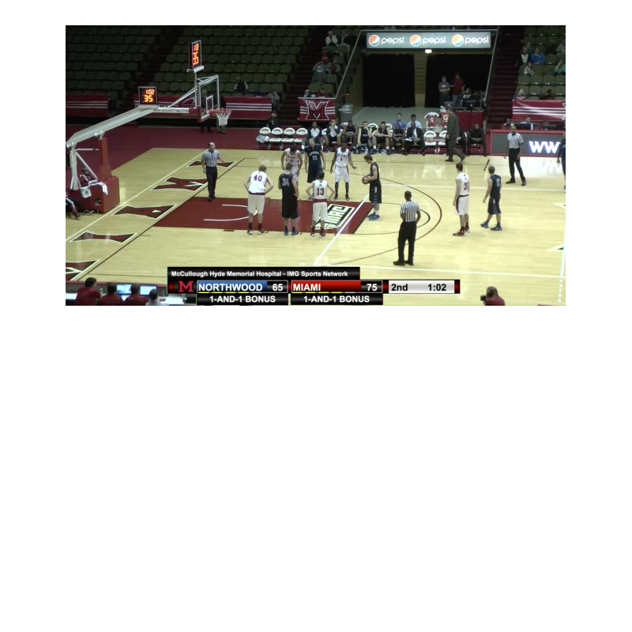
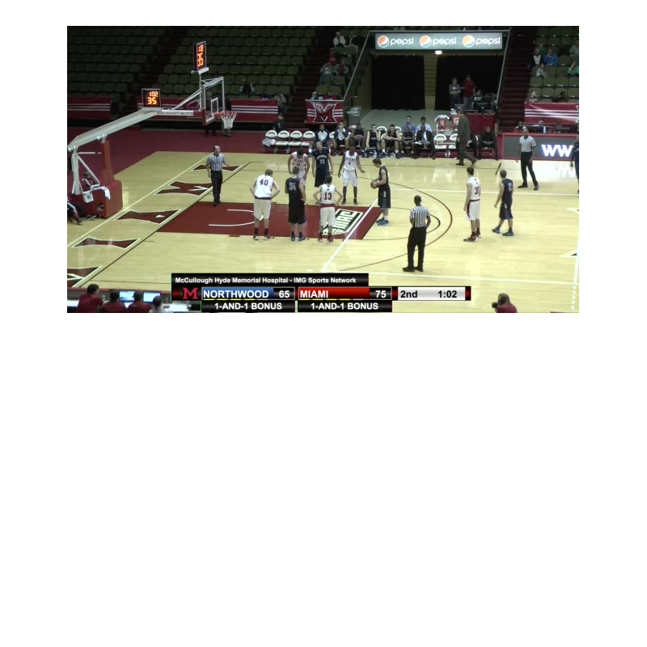
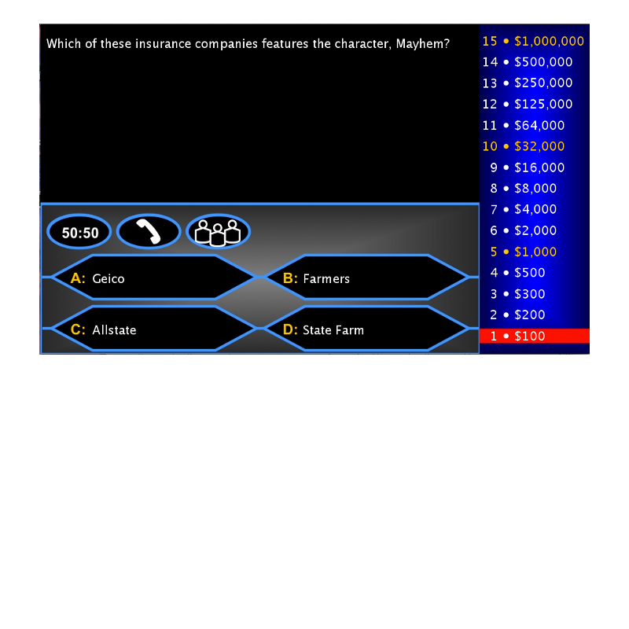
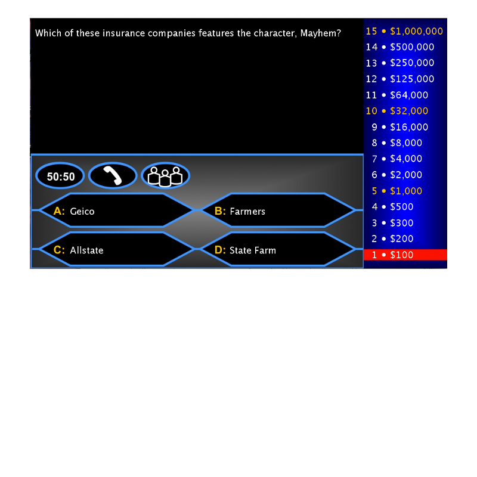

Link: CSS3 Generator
This website assists its users in creating beautiful CSS effects by directing users to helpful resources, such as gradient generators, animations, transitions, and shadows. These tools are extremely helpful because the CSS code generated has browser specific implementations so that everything will look about the same regardless of the browser used to view the webpage.
 

 
